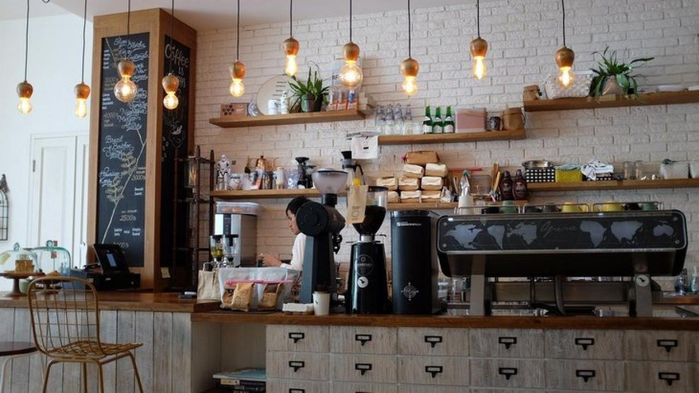

Website cho quán ăn, quán cà phê cần có gì: menu dễ cập nhật, ảnh món thật, giá rõ ràng

Món thật của quán, giá rõ ràng trên menu — hai thứ khách xem đầu tiên trước khi quyết định ghé quán của bạn.
11 giờ trưa, quán đang vào cao điểm: bếp gọi món dồn dập, nhân viên chạy bàn không kịp, còn chiếc điện thoại để ở quầy thì reo liên hồi. Khách gọi hỏi đúng ba câu quen thuộc — "quán còn bàn không em", "hôm nay có món gì, giá thế nào", "quán mình ở đoạn nào, có chỗ để xe không". Bạn vừa lật chảo vừa trả lời, trả lời xong quay lại thì món trên bếp đã khét một góc. Tối về mở fanpage, bài đăng menu từ tháng trước đã trôi xuống dưới mấy chục bài, khách lạ vào xem chẳng biết tìm ở đâu, còn khách quen thì lười lội tìm nên lại gọi điện hỏi từ đầu.
Chủ quán ăn hay quán đồ uống nào cũng quen cảnh đó. Vấn đề không nằm ở món ăn — món của bạn ngon, khách ăn một lần là nhớ. Vấn đề nằm ở chỗ quán chưa có một địa chỉ cố định trên mạng để khách tự xem menu, tự xem giá, tự tìm đường trước khi ghé, thay vì mọi câu hỏi đều dồn hết vào chiếc điện thoại của bạn. Ngay dưới đây, mình sẽ cùng bạn bóc tách những mục một website quán ăn thực sự cần có, vì sao phần lớn trang quán ăn hiện nay không kéo được khách, và cách bạn tự kiểm tra trước khi bỏ tiền làm web.
Vì sao quán nấu ngon vẫn vắng khách mới: ba lỗi quen thuộc trên trang của quán
Lỗi thứ nhất là menu chỉ là một tấm ảnh chụp tờ menu giấy. Rất nhiều quán chụp lại cuốn menu in, đăng lên fanpage hoặc nhét vào một góc website. Trên màn hình điện thoại, tấm ảnh đó nhỏ xíu, khách phải chụm hai ngón tay phóng to từng khu vực, chữ vỡ nét, giá nhìn không rõ. Tệ hơn, giá trong ảnh là giá của lần in gần nhất — đổi giá một món, thêm một món mới theo mùa, bạn phải in lại, chụp lại, đăng lại từ đầu. Sau vài lần ngại, menu trên mạng mặc nhiên thành menu cũ, khách xem một đường, đến quán tính tiền một nẻo, và ấn tượng "quán không rõ ràng" bắt đầu từ đó.
Lỗi thứ hai là giấu giá hoặc để giá kiểu "liên hệ". Người đi ăn uống theo nhóm tính toán rất thực tế: trước khi quyết định ghé một quán lạ, họ muốn ước lượng bữa ăn hết khoảng bao nhiêu cho 2 người, cho nhóm 6 người. Không thấy giá, họ ngại gọi hỏi từng món, sợ bị hiểu là kén chọn, sợ hơn nữa là cảm giác vào quán rồi mới biết giá. Trong lúc chần chừ đó, họ chọn quán bên cạnh có giá niêm yết rõ ràng — không hẳn vì rẻ hơn, mà vì dễ quyết định hơn.
Lỗi thứ ba là địa chỉ khó tìm và giờ mở cửa không rõ. Trang của quán chỉ ghi tên đường mà không có số nhà, không có nút mở bản đồ, khách đi ngang khu vực phải dừng xe, mở điện thoại tra lại, tra không ra thì ghé quán khác ngay trên đường đi. Có khách tìm được quán thì đến nơi mới biết hôm nay quán nghỉ, hoặc quán chỉ bán mang về sau 21 giờ. Mỗi lỗi nhỏ như vậy lấy đi của bạn vài lượt khách mỗi ngày, mà phần lớn chủ quán không hề biết, vì khách bỏ đi thì không bao giờ gọi lại để báo lý do.
7 mục một website quán ăn, quán đồ uống thực sự cần có
Một website cho quán ăn không cần nhiều trang, càng không cần hiệu ứng cầu kỳ. Nó cần đúng những mục dưới đây — mỗi mục giải quyết một câu hỏi cụ thể mà khách luôn hỏi trước khi ghé.
1. Menu dạng chữ, chia nhóm món, bạn tự sửa được trong vài phút
Menu phải là chữ thật trên trang, không phải ảnh chụp. Chữ thật thì khách đọc rõ trên mọi cỡ màn hình, tìm món bằng mắt rất nhanh khi đã chia nhóm: món chính, món gọi thêm, đồ uống, món theo ngày. Quan trọng nhất là bạn tự cập nhật được: món nào hết hàng thì ẩn đi, giá nguyên liệu tăng thì sửa con số, có món mới theo mùa thì thêm vào — thao tác vài phút ngay trên điện thoại của bạn, không phải chờ ai, không in lại bất cứ thứ gì. Menu hôm nay khác menu tháng trước là chuyện bình thường của quán ăn, và website phải theo kịp nhịp đó.
2. Ảnh món thật của quán, chụp bằng điện thoại cũng được
Khách quyết định ghé quán lạ phần lớn bằng mắt. Ảnh cần là món thật quán bạn nấu: đĩa gà nướng da vàng đúng như khi bưng ra, ly trà đào đúng màu, đúng ly quán đang dùng. Cách chụp không hề phức tạp — đưa món ra gần cửa sổ hoặc ra hiên có ánh sáng tự nhiên, lau sạch miệng đĩa, chụp từ trên xuống một tấm, chụp nghiêng 45 độ một tấm. Ba đến năm món "tủ" được chụp tử tế và đặt lên đầu menu có sức thuyết phục hơn ba mươi tấm ảnh sưu tầm trên mạng, vì khách đến nơi thấy đúng món đó trên bàn, và niềm tin bắt đầu từ sự trùng khớp nhỏ này.
3. Giá niêm yết rõ ràng ngay cạnh tên món
Mỗi món một dòng giá cụ thể, khách cộng nhẩm được tổng bữa ăn trước khi ra khỏi nhà. Với món giá theo thời giá như hải sản, đừng để trống: ghi rõ "giá theo ngày — bấm gọi để biết giá hôm nay", khách vẫn thấy sự minh bạch và có sẵn nút gọi ở ngay đó. Quán đồ uống nên ghi rõ size và giá từng size, ghi rõ phụ phí khi thêm topping, vì đó là những khoản khách hay bị bất ngờ nhất lúc tính tiền.
4. Giờ mở cửa, giờ nhận đơn cuối và ngày nghỉ cố định
Ghi rõ quán mở mấy giờ, đóng mấy giờ, có nghỉ trưa không, ngày nào trong tuần nghỉ cố định, ngày lễ có bán không. Quán có giao hàng thì ghi thêm giờ nhận đơn giao cuối cùng trong ngày. Một dòng thông tin tưởng nhỏ này cứu bạn khỏi những cuộc gọi "quán còn mở không em" lúc 21 giờ tối, và cứu khách khỏi chuyến đi hụt — mà khách đi hụt một lần thường không quay lại lần hai.
5. Địa chỉ đầy đủ kèm nút mở bản đồ chỉ đường một chạm
Địa chỉ phải đủ số nhà, tên đường, phường/xã, và ngay bên dưới là nút bấm mở bản đồ: khách chạm vào, điện thoại tự dẫn đường tới đúng vị trí ghim của quán. Ghim phải đúng vị trí thật — lệch một con hẻm là khách vòng vo rồi bỏ cuộc. Nên ghi thêm một mốc dễ nhận biết kiểu "đối diện chợ", "cạnh cây xăng", "cách ngã tư 200 mét", vì người đi đường định vị bằng mốc quen thuộc nhanh hơn bằng số nhà.
6. Nút gọi điện và Zalo nổi, khách hỏi còn bàn trong vài giây
Khi khách đang đói và đang lướt xem menu, nhu cầu hỏi "còn bàn không, đặt trước hai người" xuất hiện đúng khoảnh khắc đó. Nút gọi và nút Zalo ghim nổi trên màn hình giúp khách chạm một cái là liên hệ được ngay, không phải thoát ra, tìm số, lưu số rồi mới gọi. Với quán đồ uống, đây cũng là kênh khách đặt mang về: xem menu trên web, nhắn Zalo chốt món, ghé ngang lấy — nhanh cho cả hai phía.
7. Form đặt bàn, đặt món trước — và khu vực đặt món giao tận nơi thanh toán COD
Giờ cao điểm, quán đông, không ai kịp nghe điện thoại — đó là lúc form đặt bàn phát huy tác dụng: khách để lại tên, số điện thoại, số người và giờ đến ngay trên web, thông tin nằm yên ở đó không trôi như tin nhắn, hết ca đông bạn mở ra gọi lại xác nhận từng người. Cần nói rõ cơ chế để bạn không kỳ vọng sai: đây là form ghi nhận yêu cầu đặt bàn, quán gọi lại xác nhận là xong — đơn giản, vừa đủ cho quán nhỏ, không phải phần mềm quản lý sơ đồ bàn theo thời gian thực. Với món mang về và giao tận nơi, gói web có sẵn giỏ hàng và đặt hàng COD: khách chọn món vào giỏ, điền địa chỉ, bạn giao tới nơi và thu tiền khi khách nhận — đúng thói quen mua bán quen thuộc, khách không phải chuyển khoản trước cho một quán họ mới biết lần đầu.
👉 Xem thư viện mẫu web theo ngành nghề tại Web Khởi Nguồn
Không gian quán thật, menu rõ ràng và giá niêm yết — ba thứ khách kiểm tra trước khi quyết định ghé một quán lạ.
Khách quen và khách lạ dùng website của quán theo hai cách hoàn toàn khác nhau
Khách quen — người ở quanh khu vực, đã ăn ở quán vài lần — vào web của bạn với một mục đích rất thực dụng: xem hôm nay có món gì mới, món tủ còn không, giá có đổi không, rồi gọi mang về hoặc rủ thêm bạn bè. Với nhóm này, menu cập nhật đều và nút gọi/Zalo nhanh là hai thứ quan trọng nhất; họ không cần xem ảnh không gian quán vì họ thuộc lòng rồi.
Khách lạ — người tìm "quán ăn gần đây" trên Google, khách đi đường, khách được bạn bè gửi link — lại dùng web như một vòng kiểm tra tin cậy. Họ xem ảnh món có thật không, giá có rõ không, quán có trông sạch sẽ qua ảnh không gian không, khoảng cách từ chỗ họ đang đứng tới quán bao xa, quán còn mở cửa không. Chỉ cần một trong các mục đó thiếu, họ lướt sang quán tiếp theo trong danh sách. Hiểu hai hành vi này, bạn sẽ biết vì sao website quán ăn phải vừa có menu "tươi" cho khách quen, vừa có đủ ảnh, giá và bản đồ cho khách lạ — thiếu một phía là mất một nửa cơ hội.
Gói website trọn gói 586.000đ tại Web Khởi Nguồn gồm những gì cho quán ăn?
Nghe giá 586.000đ, nhiều chủ quán nghi ngờ ngay: rẻ vậy thì web làm ra chắc chỉ để "cho có", được vài hôm lại lỗi. Nghi ngờ đó có cơ sở nếu giá rẻ đến từ việc cắt xén tính năng. Còn ở đây, giá thấp đến từ cách làm: quán nhỏ chỉ cần 1 đến 5 trang đúng nhu cầu, cấu trúc trang cho cửa hàng và dịch vụ đã được đóng gói thành quy trình chuẩn, đội ngũ không phải ngồi lập trình lại từ con số không cho từng khách, nên chi phí dồn vào đúng phần nội dung và giao diện riêng của quán bạn. Bạn có thể xem chi tiết tại bảng giá và mục gói 586.000đ gồm những gì trên trang chủ.
Cụ thể với một quán ăn hay quán đồ uống, gói bàn giao gồm: website 1–5 trang theo yêu cầu (trang giới thiệu quán, trang menu, trang liên hệ — bố cục theo đúng ngành ăn uống và màu sắc thương hiệu của quán); chuẩn mobile tuyệt đối vì phần lớn khách xem bằng điện thoại; tên miền năm đầu, hosting và chứng chỉ bảo mật SSL đã gồm sẵn trong giá; giỏ hàng và đặt hàng COD cho món giao tận nơi; form liên hệ và đặt bàn thu thông tin khách; cụm nút gọi — Zalo — bản đồ nổi một chạm. Web dựng xong trong 1–3 ngày, kèm hướng dẫn sử dụng chi tiết từ A–Z để bạn tự sửa menu, đổi giá, đăng món mới mỗi ngày mà không cần biết kỹ thuật, và bảo hành kỹ thuật trọn đời. Chính sách làm thử trước, hài lòng mới thanh toán, không cần đặt cọc — bạn xem trước bản dựng của chính quán mình rồi mới quyết định. Khi quán mở thêm chi nhánh hay cần bán hàng bài bản hơn, bạn có thể nâng cấp lên gói website cao cấp mà không phải làm lại từ đầu.
Cách tự kiểm tra một website quán ăn trước khi quyết định làm
Dù bạn làm web ở đâu, hãy tự kiểm tra bằng trải nghiệm của chính khách hàng, với bốn bước đơn giản sau. Bước một: lấy điện thoại của bạn, bật 4G, đóng vai một khách lạ chưa từng biết quán, thử tìm quán và mở trang lên. Đếm số lần chạm từ lúc trang mở tới lúc bạn thấy được giá của món tủ và bấm được nút chỉ đường — nếu phải qua quá 3 đến 4 lần chạm, hoặc phải phóng to thu nhỏ để đọc menu, trang đó đang làm mất khách mỗi ngày. Bước hai: thử tự sửa menu — đổi giá một món, ẩn một món hết hàng. Nếu thao tác mất quá vài phút hoặc phải nhắn nhờ người khác làm hộ, về lâu dài menu sẽ lại thành menu cũ, và bạn quay về đúng lỗi thứ nhất ở đầu bài. Bước ba: bấm thử nút gọi và nút Zalo ngay trên trang, xem có ra đúng số của quán không; mở nút bản đồ, xem vị trí ghim có đúng cổng quán không, có lệch sang con hẻm bên cạnh không. Bước bốn: mở lại trang bằng 4G vào đúng giờ cao điểm, mạng yếu, xem trang và ảnh món có hiện nhanh không — khách của bạn cũng đang mở trang trong đúng điều kiện như vậy, thường là khi họ đang đói và thiếu kiên nhẫn nhất.
Quay lại cảnh 11 giờ trưa ở đầu bài: bạn không thể làm điện thoại ngừng reo, nhưng bạn có thể khiến phần lớn câu hỏi trong đó tự có câu trả lời trước khi khách bấm gọi. Menu tự xem được, giá tự cộng được, đường đi tự mở được — lúc đó cuộc gọi còn lại chỉ là "cho anh đặt bàn bốn người, 12 giờ nhé", đúng kiểu cuộc gọi mà chủ quán nào cũng muốn nghe. Nếu bạn đang cân nhắc làm website cho quán của mình, cứ xem trước các mẫu theo ngành nghề, đối chiếu với bảy mục trong bài này, rồi quyết định cũng chưa muộn.
Muốn quán của bạn có website như vậy?
Xem trước các mẫu demo theo ngành nghề, ưng mẫu nào làm mẫu đó — trọn gói 586.000đ, xem mẫu trước khi quyết định.